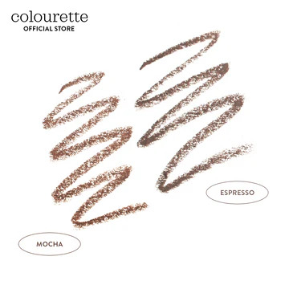

Brow Bestie
₱349.00
double ended • smudge proof • eyebrow pencil • 0.3g
Brows are sisters, not twins. But they can also be besties! FOMO-no
more with budge-proof brows.
Brow Bestie is a double-ended eyebrow pencil with a smudge-proof and
long-lasting formula. Fill in, define, and fluff with fuss-free
application! Available in two shades! #GoBestie
- Brow Bestie in Espresso is perf for our dark haired besties
- Brow Bestie in Mocha for light brown and bleached or colored hair